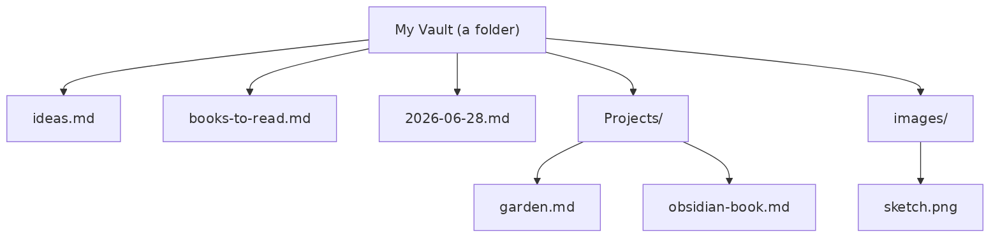
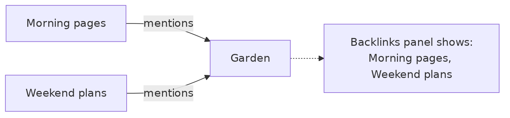
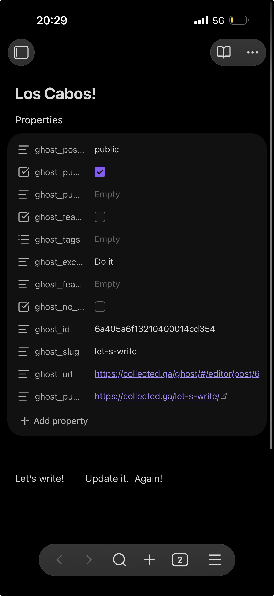
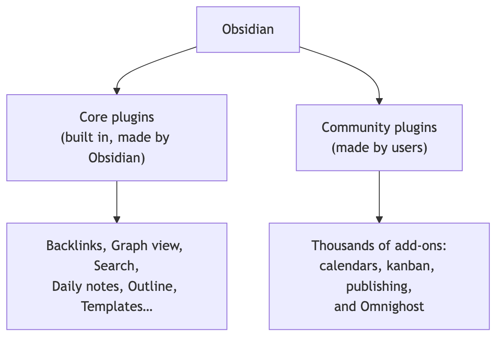
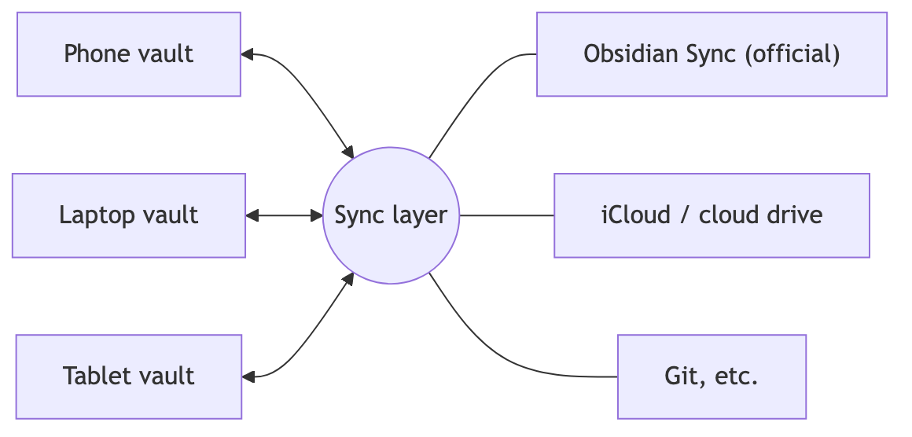
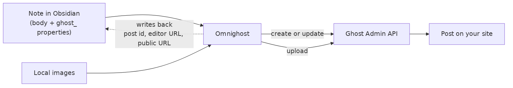
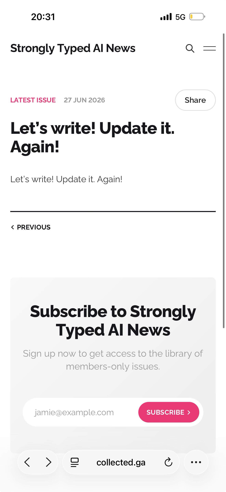
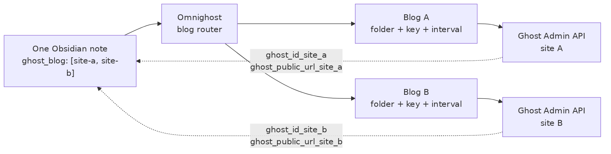
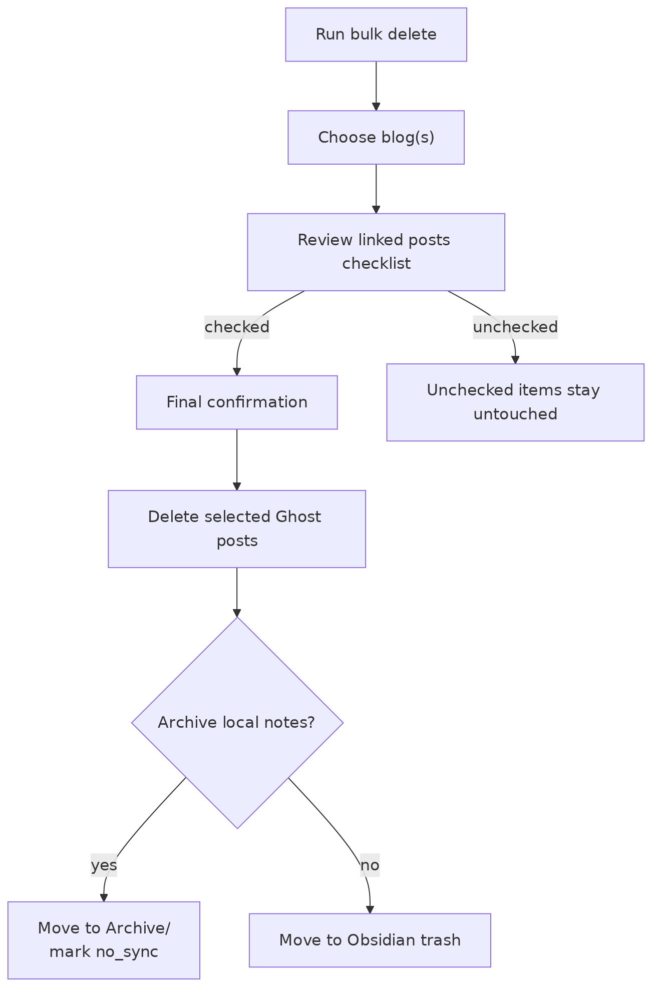
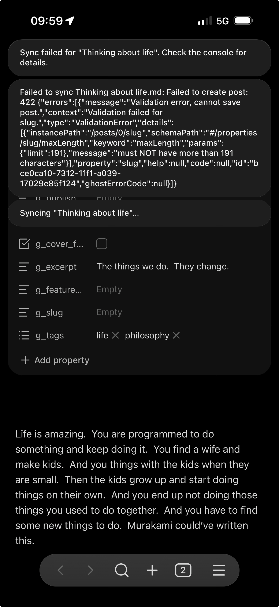

Publishing from Obsidian to Ghost
Across Every Blog
Alexy Khrabrov
omnighost (0.16.1)
This is a field guide to Omnighost, the First Pair Press bridge from Obsidian to Ghost. It still assumes no prior knowledge: if you have never heard of Obsidian, never written a note in “Markdown,” and are not sure what a “vault” is, you are in exactly the right place.
The book is written with the whole Obsidian loop in
mind: phone, tablet, laptop, desktop, and any synced vault that can run
the plugin. First Pair Press uses that loop to draft anywhere and
publish everywhere: a release note from an iPhone, a long essay from a
Mac, an imported project announcement from a .textpack, or
a photo-heavy post assembled inside a vault.
Omnighost is now part of the First Pair Press publishing stack. It turns notes into live Ghost posts, keeps those posts linked to their source notes, uploads local images, imports packaged drafts with their assets, and fans the same message out through multiple blogs without losing track of which post lives where.
A note on the pictures: the diagrams are drawn fresh for this book, and the phone screenshots are from the author’s own device. Where this book points you to features in detail, it links to the official Obsidian documentation at help.obsidian.md rather than copying it — that is always the most current source.
Let’s begin.
Imagine a drawer full of plain text files — one per idea, project, person, or day. Now imagine that drawer is searchable in an instant, that any note can link to any other note, and that the whole thing lives on your own device instead of someone else’s server. That, in one sentence, is Obsidian.
More precisely, Obsidian is an app for writing and connecting notes that are stored as ordinary files on your device. Three ideas make it tick.
1. Your notes are plain files. Each note is a normal
text file with a .md extension (more on .md in
a moment). You can open them in any other program, back them up like any
other file, and read them in fifty years without needing Obsidian at
all. Nothing is locked inside a proprietary database.
2. Your notes live in a “vault.” A vault is just a folder on your device that Obsidian watches. Everything in that folder — notes, images, sub-folders — is your vault. You can have one vault for everything, or several (work, personal, a journal). A vault is portable: copy the folder, and you’ve copied your whole knowledge base.

3. Notes connect to each other. The real magic is linking. Any note can point to any other note, and Obsidian remembers the connection in both directions. Over time your notes stop being a pile and start being a web — a personal Wikipedia where you are the only editor and the only reader.
For First Pair Press, that same plain-file vault is also the press room. A book idea, release announcement, technical note, and public essay can start as ordinary Markdown, collect images beside it, move between devices, and become a web post only when it is ready. Omnighost adds the publishing rail without taking the vault away from Obsidian.
Markdown is a way of writing formatted text using plain characters.
Instead of clicking a “bold” button, you wrap a word in asterisks.
Instead of a heading style, you start a line with #. It
looks like this:
# A heading
This is a paragraph with a **bold** word and an *italic* one.
- a bullet
- another bullet
> a quoted lineYou don’t have to memorize it — Obsidian shows you the formatted result as you type, and there is a one-page cheat sheet at the back of this book. The point is that the formatting is part of the text, so your notes stay readable anywhere.
Obsidian is free to download. The fastest path on a phone:
That’s genuinely it — you now have a working second brain in your pocket.
On a phone the interface is deliberately spare. A few things to find:
If you ever feel lost, remember two gestures: swipe from the left for your files, and open the command palette to search for any action by name.
Obsidian can show a note two ways. Live Preview formats text as you write (bold looks bold). Source mode shows the raw Markdown characters. Beginners usually live in Live Preview; switch to Source when you want to see exactly what’s in the file. You can toggle between them from the command palette or the note’s “more options” menu.
You already saw the basics. Here is the working set you’ll use 95% of the time.
Headings structure a note. One # is the
biggest; more # make smaller sub-headings.
# Title
## Section
### Sub-sectionEmphasis:
*italic* or _italic_
**bold** or __bold__
~~strikethrough~~Lists — bullets with -, numbers with
1.:
- milk
- eggs
1. wake up
2. coffeeCheckboxes turn a list into a to-do list. Tap a box in Live Preview to check it off:
- [ ] write a note
- [x] install ObsidianQuotes and code:
> A quoted thought.
Inline `code` for a command. For several lines of code or commands, fence them with three backticks on their own lines, above and below.Images can be dropped or pasted into a note; Obsidian stores the file in your vault and writes a link to it for you.
The golden rule: when in doubt, just type. Markdown is forgiving, and anything it doesn’t recognize is simply shown as plain text.
This is the chapter that turns a notes app into Obsidian.
To link from one note to another, type two square brackets and start typing a name:
See also [[Books to read]] and [[Garden]].As you type inside the brackets, Obsidian suggests matching notes. Pick one and you’ve made a link. Tap the link later to jump there. If the target note doesn’t exist yet, the link is created “empty” — tap it and Obsidian makes the note for you. This is a lovely way to write: mention an idea now, flesh it out later.
Here’s the part that feels like magic. If note A links to note B, then note B automatically knows that A points at it. Open B, look at its Backlinks panel, and you’ll see every note that mentions it — without you ever editing B.

Backlinks mean you never lose a thought. Write about your garden in today’s journal, and the Garden note quietly collects every mention over the months.
Obsidian can draw your whole vault as a graph: each note is a dot, each link a line. Early on it’s a few scattered dots. After a few hundred notes it becomes a constellation, and clusters appear where your real interests live. The graph is more fun than useful at first — but it’s a great way to see your thinking take shape.
There is no single “right” way to organize Obsidian, which is liberating and, at first, slightly terrifying. Three tools help, and you can mix them freely.
Folders work exactly as you’d expect — drag notes into them, nest them. Good for coarse separation (Work, Personal, Journal). Don’t over-think folders; linking and search make deep hierarchies unnecessary.
Tags (from the last chapter) cut across
folders. A note in Work/ can carry #idea right
alongside a note in Personal/.
Properties are the most powerful and the least obvious, so they get their own section.
Every note can carry a small block of structured information at the very top, called properties (the underlying format is called YAML frontmatter). It’s fenced by three dashes:
---
title: Trip to Los Cabos
status: draft
tags: [travel, 2026]
rating: 5
---
The body of the note starts here.Each line is a key and a value. Obsidian shows these as a tidy Properties panel at the top of the note, with the right input for each type — a checkbox for yes/no, a date picker for dates, a list editor for lists.

Why bother? Because properties make notes queryable and automatable. Plugins read them, dashboards filter on them, and — as you’ll see in the final chapter — a publishing plugin uses them to decide a post’s title, visibility, and schedule. For now, just know that the block at the top of a note is where the structured information lives, separate from the prose below it.
A vault is only as good as your ability to get back to a note. Obsidian gives you three fast paths, and all three are reachable from the phone.
Search (the magnifying glass in the left sidebar) looks through the full text of every note. It supports quoted phrases and simple operators, but plain words get you a long way.
Quick Switcher jumps to a note by name. Open the command palette and run “Quick switcher,” type a few letters of a note’s title, and hit it. This is the single fastest way to navigate once you know roughly what you’re looking for.
Command Palette is the master key. It’s a searchable list of every command in the app and its plugins — “Toggle Live Preview,” “Open graph view,” “Create new note,” and hundreds more. You don’t need to memorize menus; you just remember a word or two and search. On a phone it’s usually a toolbar icon or a swipe-down; bind it to something comfortable and use it for everything.
Tip: most actions you’ll read about in this book — including the Omnighost commands later — are run from the command palette by typing part of their name.
Out of the box, Obsidian is intentionally modest. Its power comes from plugins, and there are two kinds.

Core plugins are made by the Obsidian team and ship with the app. They’re just toggled on or off in Settings → Core plugins. Many features you’ve already met — Backlinks, Graph view, Daily notes, Templates, Outline — are core plugins. If something seems missing, check here first; it may simply be switched off.
Community plugins are built by other people and published to an in-app directory. They unlock workflows the core app never tries to cover: calendars, task boards, spaced-repetition flashcards, and the Ghost publishing plugin in the next chapter.
The first time you want a community plugin, Obsidian asks you to
acknowledge that these are third-party add-ons (sensible — they run real
code). Once you’ve turned the feature on, you can
Browse the directory, install a plugin, and
enable it. Each plugin lives in your vault under a
hidden .obsidian/plugins/ folder, so it travels with the
vault.
A few habits keep this pleasant:
There’s also a popular community plugin called BRAT that installs and auto-updates plugins straight from a GitHub repository. It’s the easiest way to run a plugin that isn’t (yet) in the official directory — which is exactly how you’ll install Omnighost on a phone in the final chapter.
Most people want the same notes on their phone and their computer. Because a vault is just a folder, you have several ways to keep it in step.

Obsidian Sync is the official, paid service. It’s the most reliable option, encrypts your notes end-to-end, handles conflicts gracefully, and works across every platform with no fiddling. If syncing matters to you, it’s the least painful choice.
iCloud Drive (Apple devices) is free and built in: put the vault in iCloud and your iPhone, iPad, and Mac share it. It works well for one person on Apple gear, though it can be slower to settle than Sync and is less forgiving if two devices edit the same note at the same moment.
Other options exist — third-party cloud drives, or Git for the technically inclined (which also gives you a full history). These are more setup but more control.
Two pieces of advice regardless of method:
So far your notes have stayed private. This chapter is about the other direction: taking a note you wrote in Obsidian and publishing it as a post on a real website — and, crucially, updating that post later from the same note, without creating duplicates. For First Pair Press, the tool is Omnighost: a practical web-publishing rail from any Obsidian platform to one Ghost blog or many.
Ghost is a popular publishing platform — think of it as software that runs a blog or newsletter, like a leaner, modern WordPress. A Ghost site has posts, each with a title, body, tags, an excerpt, a visibility setting (public or members-only), and a publish date.
Omnighost connects your Obsidian vault to one or more Ghost sites. You write in Obsidian as usual; the plugin pushes the note to Ghost as a post. Publish the same note again and it updates the existing post in place rather than spawning a copy. If you run several blogs, one note can publish to one site, several sites, or stay out of sync entirely.

The flow is worth understanding because it explains the whole plugin:
ghost_ or g_) tell Omnighost which
blog(s) to target, whether the post is a draft or published, who can
read it, when it should go live, and which tags/images to use.The current Omnighost is no longer just a “send this note to Ghost” button. It is a full publishing manager for a small press that writes in public:
g_blog,
the blog picker, or folder routing to decide whether a note goes to one
site, several sites, or none.Unchanged, and avoids a
needless update when nothing managed by the plugin has changed..textpack can
carry Markdown, images, and Omnighost metadata into the vault as a
sync-ready draft.main branch and rolls back if installation fails.That mix matters for First Pair Press because publishing is rarely one note to one site. A book release, a project milestone, or a manifesto may need a main press announcement, a project-specific post, a personal note, and a newsletter-oriented version. Omnighost keeps the source material in Obsidian and remembers every live destination.
Omnighost is distributed as a community plugin. The easiest route before community-directory release is the BRAT plugin mentioned earlier:
firstpair/omnighost).That works on desktop and mobile Obsidian. You can also install it by
hand: copy the plugin’s main.js,
manifest.json, and styles.css into
.obsidian/plugins/omnighost/ in your vault. Because the
plugin lives inside the vault, the same First Pair Press vault can carry
its publishing tools from Mac to iPad to iPhone.
In Settings → Omnighost, the first section is Ghost blogs. Add one block per Ghost site. Each blog has:
https://yourblog.com;Leave Use staff access token off for the usual integration path. Create a custom integration under Ghost Admin → Settings → Integrations, copy its Admin API key, and paste it into the blog’s credential field. Omnighost authenticates as that integration, with Ghost’s standard integration permissions.
Turn Use staff access token on when Omnighost should act as a particular Ghost staff member. Copy that user’s token from their profile page and paste it into the now-labelled Staff access token field. Requests then use that staff member’s role permissions: for example, a Contributor cannot publish, while Authors and more privileged roles can. This is useful when authorship and least-privilege access should follow a real editorial identity rather than a site-wide integration.
Both credentials use Ghost’s id:secret form. Tap
Save key for each blog. Omnighost stores the credential
in Obsidian’s secure keychain and immediately tests the connection. A
good connection greets you by the Ghost site’s name. If two blogs
accidentally share the same keychain secret, settings warns you, because
the wrong credential will fail with a Ghost 401.
Authentication mode belongs to each blog. Existing blogs and newly added blogs default to Admin API key, and toggling one blog to staff access does not affect the others. Adding a blog or changing the staff-access toggle redraws the settings controls without jumping the pane back to the top, so you stay with the blog you are editing.
You may enter a bare address such as yourblog.com;
Omnighost treats it as https://yourblog.com. Only specify
http:// deliberately when you are connecting to a local or
otherwise non-TLS Ghost installation.
For First Pair Press, think of each blog block as one public voice: the press site, a project site, a research notebook, a partner publication, or a newsletter-facing Ghost instance. Each one gets its own credentials and folder, but the writer stays in one Obsidian vault.
Each note you publish carries a few special properties. With the
current default prefix they read ghost_…; many people
shorten the prefix to g_… so the names fit better on a
phone. The essentials:
g_blog — a list of blog names or domain keys. Omit it
to use the default blog.g_published — a checkbox. Off keeps
the post a draft; on publishes it.g_post_access — the visibility: public,
members, or paid.g_published_at — a date, used only when you want to
schedule a post for the future.g_slug — the post’s URL ending. Leave it empty to
derive one from the title.g_tags, g_excerpt,
g_feature_image, g_cover_from_first_image —
tags, a short summary, a cover image, and the optional “use the first
body image as cover” behavior.g_no_sync — a per-note safety switch. Turn it on to
skip that note.g_id_example_com, g_url_example_com,
g_public_url_example_com — written by the plugin
after a successful publish to example.com. You don’t edit
these; they’re how Omnighost finds that blog’s post again and how you
reach it on the web.Older notes may have clean keys like g_id or map keys
like g_ids. Omnighost migrates those forward as it syncs.
The command Normalize blog references (use domain keys)
rewrites blog references to stable domain-based keys, so renaming a blog
does not break note-to-post links.
Editing those keys by hand in the native Properties panel works, but
the values are free text — easy to mistype Public when
Ghost wants public. Omnighost adds a dedicated Edit
ghost properties dialog (open it from the ghost ribbon icon,
the editor’s right-click menu, or the command palette) with proper
controls:
Because the choices are dropdowns, you can’t accidentally enter an invalid value. That single dialog is the recommended way to publish.
# Heading
at the top or a sensible filename, because the title drives the post’s
web address.Here’s the result on the open web — a note written on a phone, now a public post:

To change the post later, edit the note and Save & sync again. The plugin finds the existing post by its stored id and updates it — same URL, no duplicate. You can also run Sync current note to ghost from the command palette, or use the periodic folder sync if it is enabled for that blog.
When the managed post is already identical, Omnighost skips the Ghost update and reports Unchanged. By default it fetches the live post and compares the fields it manages, so an edit made directly in Ghost is detected rather than hidden by an old stored hash.
Omnighost calculates a canonical SHA-256 for the finished Ghost publication. The digest covers the title, converted body, status, visibility, featured flag, slug, excerpt, feature image, ordered tags, and scheduled time. It is stored in hidden per-post Ghost metadata, giving the plugin a reproducible way to decide whether the note and live post still agree.
On desktop, Omnighost can also record the source note’s Git version. If the note belongs to a Git repository and has changed, the plugin commits that note only; it never pushes. If Git is unavailable, unsafe to use, or the publish happens on mobile, the publication still has its directly comparable SHA-256.
The Publication provenance setting controls what readers see:
Hidden means non-visible, not secret or cryptographically signed. Keep Verify published content directly on if posts may also be edited in Ghost. It is enabled by default and compares the managed live fields even when the stored hash says the post is current. Turning it off permits a faster hash-only check, but direct Ghost edits may be missed.
Omnighost can manage several Ghost sites at once. For First Pair Press, this is the feature that turns a finished note into a real publicity surface.

In Settings → Omnighost, the Ghost blogs section lets you Add blog. Each one gets its own name, site address, authentication mode and credential (stored as a keychain secret), folder in your vault, sync toggle, and optional interval. Admin API key authentication is the default; turn on Use staff access token only for blogs that should publish with a staff member’s role permissions. One blog is marked the default (★), and a Test button confirms each connection by name.
Blog folders nest under one root. By default each blog’s folder
derives from its site address as
Ghost Posts/<domain> —
Ghost Posts/chief.sc, Ghost Posts/collected.ga
— so all your publishing lives under a single top-level folder. Leave a
blog’s Folder field blank for the automatic path, or
type your own to override it. If your blogs predate this layout and sit
in scattered folders, the Organize folders by domain
button in settings moves every blog’s notes (archives included) into
place with links intact, and re-points the folders — nothing changes
until you confirm.
To choose where a note goes, run the command “Set blog(s) for
this note.” A checklist appears; tick one or more blogs and
confirm. Your choice is saved in the note’s
g_blog property and sticks. If you tick
several blogs, syncing the note publishes — and later updates —
all of them at once. The last blog you pick becomes the default
for the next new note.
The folders themselves also route. A note with no g_blog
property publishes to the blog whose folder it sits in — drag a draft
into Ghost Posts/chief.sc/ and that is where it goes. Notes
directly under the root belong to the default blog. An explicit
g_blog always wins over location.
Selective sync has two levels. For one note, set
g_no_sync: true and Omnighost leaves it alone. For a whole
blog folder, turn off Auto-sync this folder in that
blog’s settings; manual sync still works when you ask for it.
A typical First Pair Press announcement might start as one note:
---
g_blog: ["firstpair.press", "chief.sc", "collected.ga"]
g_slug: "omnighost-first-pair-press"
g_tags: [first-pair-press, omnighost, publishing]
g_excerpt: "Omnighost turns an Obsidian vault into the web publishing rail for First Pair Press."
g_cover_from_first_image: true
g_published: true
---On sync, Omnighost creates or updates one Ghost post per blog and writes back separate identity keys for each target. That means the press can spread the same news across several audiences while preserving one source note and one edit loop. If the subtitle changes, the image needs a better caption, or a date moves, a second sync updates every linked post in place.
To bring an existing site into Obsidian, run “Import all
posts from a ghost blog,” choose one or more blogs, and every
post arrives as a note in that blog’s folder, already tagged with its
g_blog and per-blog id/URL keys. To import one post, use
Import post from ghost with the Ghost editor URL. To
connect an existing note to an existing Ghost post, use Link
note to ghost post and choose whether Ghost overwrites the note
or the note syncs up to Ghost.
One thing to know: a note’s identity on each blog is its stored id,
with the slug as the fallback before the first id is written. Keep slugs
stable once a note is published widely. If you remove a blog from
g_blog after the note has already published there, the next
interactive sync warns about the orphaned Ghost post. You can delete it
on Ghost, keep it by re-adding that blog, or decide later.
A textpack is a small zip that bundles a Markdown post together with its images — the format writing apps like Ulysses use to move documents between devices. Omnighost imports textpacks directly, which makes it the last mile for drafts prepared elsewhere: a post written in a project repo, exported from a book pipeline, or polished in another writing app travels to your phone as one file and leaves it as a publishable First Pair Press draft.
There are two ways in:
Either way the result is the same: the note lands in the blog’s
folder with its Ghost properties already set, and its images are placed
under assets/<slug>/ next to it — they upload to
Ghost automatically on the first sync, like any other local image. The
note arrives as a draft, so nothing is published until you
decide.
A pack can also carry its own publishing instructions — blog, slug,
title, tags, excerpt — embedded in the bundle’s info.json
under Omnighost metadata. Packs prepared with the companion
textpack.py script target the right blog by themselves:
save the file, open Obsidian, review the draft, sync, done.
Those companion-script packs can also preserve source provenance across the handoff. The script safely commits the source Markdown and referenced local images, then embeds the Git commit and a payload SHA-256. Omnighost verifies the payload on import. Publishing controls, blog routing, and Ghost id/URL write-backs do not invalidate the inherited source version; changing authorial metadata, body text, or imported asset bytes does. The Git claim is self-attested rather than a signature, so treat it as traceability, not proof that an untrusted pack came from a particular repository.
This is how First Pair Press can connect repo-native writing to mobile publishing. A project can build a textpack with rendered diagrams, screenshots, and metadata; iCloud or another sync path drops it into the vault; Omnighost imports it; the editor checks the note on whichever Obsidian device is in hand; and the same note can then publish to the press blog, the project blog, or both.
Ghost’s editor stores rich blocks rather than Markdown, so importing requires a conversion in the other direction. Current Omnighost keeps fenced code and blockquotes bounded correctly: prose, headings, and images that follow a Python or other code block stay outside its closing fence, and paragraphs after a quotation are no longer swallowed into the quote. Multi-paragraph quotations remain together.
If an older import looks like one enormous code block or quotation, update Omnighost and import that Ghost post again. The repair is in the importer; it does not rewrite an already damaged note automatically.
Publishing tools need a careful delete story. Omnighost never deletes remote posts silently.

Run “Bulk delete posts (local notes + ghost)” to choose one or more blogs. Omnighost lists the linked notes and Ghost posts it can find. Nothing is preselected — tick exactly the posts you want gone, or use the Select all checkbox at the top of the list. When you confirm, Omnighost deletes only the selected Ghost posts. It also removes the selected local notes.
If Archive deleted notes is on, local notes move
into an archive subfolder inside their blog folder instead of going to
trash. Omnighost stamps them with archive metadata and
g_no_sync: true, so archived notes are not accidentally
re-published. If the archive option is off, the notes go to Obsidian
trash.
Two extra settings control how cautious the workflow is:
Ghost validates posts, and when a field is off it returns a precise message. Reading that message is the fastest way to fix it:

A few common cases and what they mean:
# Heading or set g_slug
explicitly.BRAT remains the easiest automatic update route, but Omnighost can
now replace its own installed bundle. Open the command palette and run
Update from GitHub. The command downloads the current
main.js, manifest.json, and
styles.css from firstpair/omnighost on GitHub,
stages all three, clears stale temporary or backup files left by an
earlier attempt, and then replaces the installed files as one update.
Even an unchanged file is refreshed, so the three-file bundle cannot
become a mixture of releases.
If downloading or installing any file fails, Omnighost restores the
previous bundle. After a successful update, restart Obsidian or reload
the app so it runs the new main.js.
This command tracks the repository’s main branch, not a separately reviewed app-store release. Use it when you trust that repository and want its newest build. The command itself first appeared under the temporary name Update from Codex; current releases call it Update from GitHub.
Plenty of tools can post from a note. The hard part — and the reason this plugin exists — is re-posting the same note without making a mess, especially when the same announcement appears on several blogs. Omnighost keeps a stable link between one note and each of its Ghost posts: edit the note, sync, and the live posts change in place. The First Pair Press vault stays the single source of truth, and the web stays in step with it.
You now have the whole loop: capture ideas as notes, connect them with links, organize lightly with folders, tags, and properties, find anything in a tap, extend the app with plugins, sync across your devices, and — when a note is ready for the world — publish it through Omnighost to the First Pair Press web.
A few directions from here:
.textpack the handoff format so
Markdown, images, and Omnighost metadata travel together.Most of all: keep the loop alive. Write in Obsidian, review the properties, sync through Omnighost, then keep improving the source note as the public story evolves.
# Heading 1 ## Heading 2 ### Heading 3
**bold** *italic* ~~strikethrough~~
- bullet 1. numbered - [ ] / - [x] task
> quote `inline code` [[Link to a note]]
#tag  [text](https://link)
(For multi-line code, fence it with three backticks on their own lines.)
With the default prefix the keys begin ghost_; many
users shorten it to g_. The table below uses
g_ for compactness. If your prefix is ghost_,
read g_published as ghost_published, and so
on.
| Property | Type | Meaning |
|---|---|---|
g_blog |
list of names or domains | Which blog(s) the note publishes to (default if absent) |
g_published |
checkbox | Off = draft, on = published |
g_post_access |
public / members / paid |
Who can read it |
g_published_at |
date | Future date schedules the post |
g_featured |
checkbox | Mark as a featured post |
g_slug |
text | URL ending (empty = from title) |
g_tags |
list | Post tags |
g_excerpt |
text | Short summary (max 300 chars) |
g_feature_image |
text | Cover image URL |
g_cover_from_first_image |
checkbox | Use the first body image as the cover |
g_no_sync |
checkbox | Skip this note when syncing |
g_id_<blog> |
written by plugin | The Ghost id for one target blog, using a domain-based suffix |
g_url_<blog> |
written by plugin | The Ghost editor link for that blog’s post |
g_public_url_<blog> |
written by plugin | The live, public web address for that blog’s post |
g_archived |
written by plugin | True when a bulk-deleted local note is archived |
g_archived_at |
written by plugin | When the note was moved into the archive folder |
g_archived_from |
written by plugin | The note’s original vault path before archive |
Legacy single-blog notes may contain g_id,
g_url, or g_public_url. Omnighost reads them
for compatibility and migrates toward per-blog keys on later syncs.